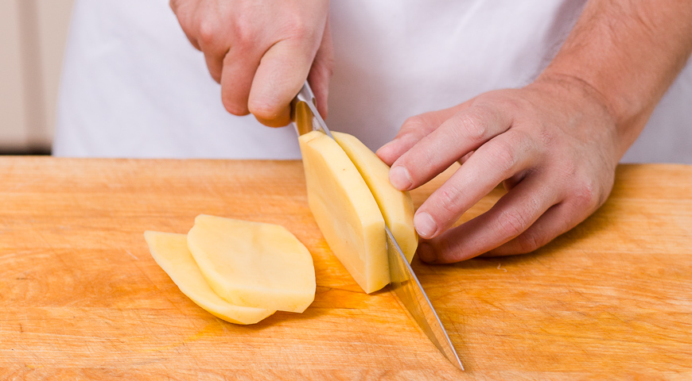

Картофель ФРИ
ссылка на автора

Этап 1
Очистить картофель от кожуры .Срежете округлые части со всех сторон так чтобы у вас получился прямоугольный брусок. Нарежьте его вдоль пластинами толщеной 1 см, каждую пластину на брусочки толщеной 1 см

Этап2
Промойте нарезанный картофель в холодной воде и положите в кастрюлю с подсоленной кипящей водой (воды должно быть много, чтобы картофель в ней лежал свободно). Доведите воду до кипения на среднем огне. Убавьте огонь до минимального и варите картофель 2 мин. Откиньте его на дуршлаг и дайти обсохнуть и остыть, 20–30 мин. Все это нужно для того, чтобы избавиться от лишнего крахмала.

Этап3
Остывший картофель разложите на подносе и уберите в морозильник на 20–30 мин. Это нужно, чтобы на картофеле во время жарки сразу же образовалась хрустящая корочка.

Этап4
Пока картофель лежит в морозильнике, подготовьте глубокую широкую кастрюлю (или сковороду, или вок) с толстым дном для фритюра. Налейте туда масло – должен получиться слой глубиной не меньше 8–10 см. Чем больше масла, тем большие порции картофеля можно закладывать. Поставьте кастрюлю на средне-сильный огонь и разогрейте масло до 190 °С.

Этап5
Если у вас нет термометра, держите наготове несколько кубиков белого хлеба со стороной 1 см. Если брошенный в горячее масло кубик поджаривается до золотистого цвета за 30 сек., значит, масло готово. Порциями, аккуратно, шумовкой выкладывайте подмороженный картофель в масло и обжаривайте до красивой золотистой корочки

Этап6
Cо всех сторон, примерно 6 мин. Чтобы сохранить уже готовый картофель теплым, выкладывайте его сначала на 1 мин. на бумажные полотенца, чтобы стек лишний жир, а потом на блюдо или противень, стоящий в разогретой до 80–100 °С духовке. Подавайте картофель с кетчупом.